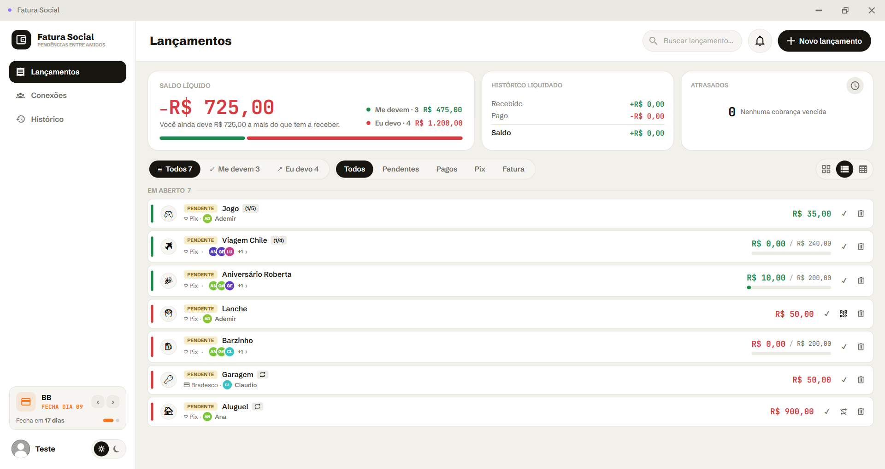
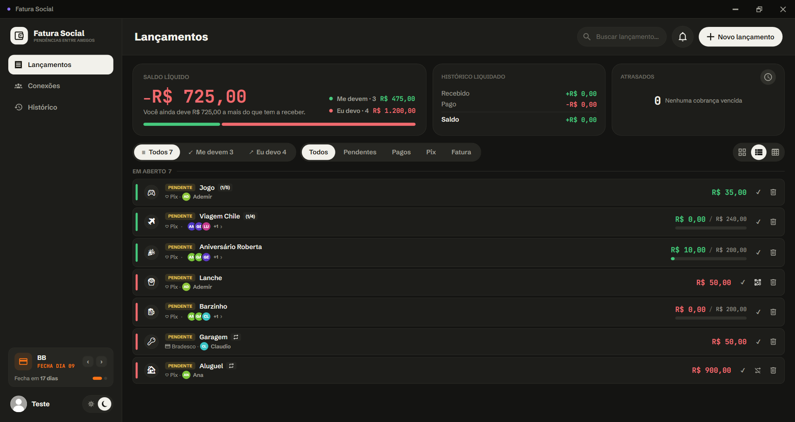
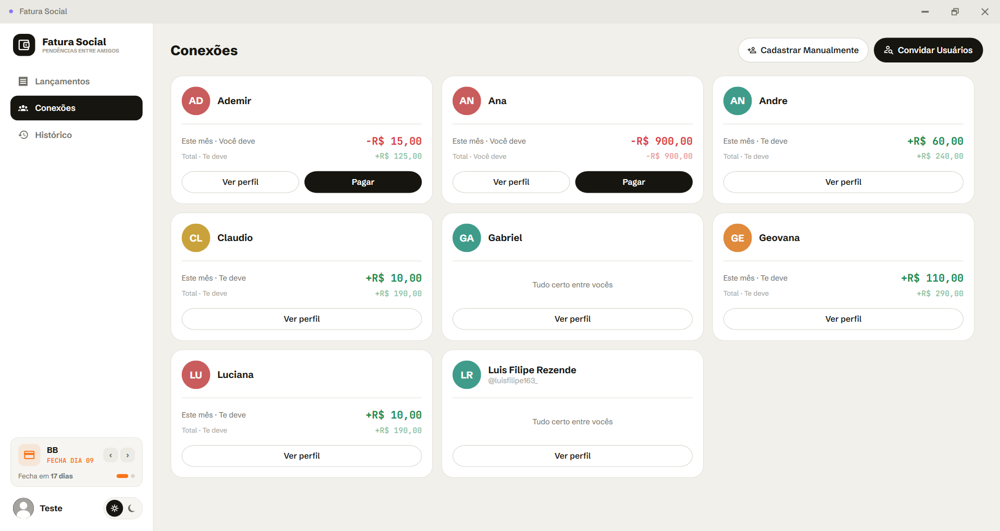

Fatura Social
Todo mundo já dividiu uma conta, emprestou dinheiro para um amigo ou pagou o churrasco do grupo — e depois viveu a parte chata. Cobrar constrange, a memória falha e quem passou o cartão banca o atraso de todos. O Fatura Social registra cada pendência com nome e valor, acompanha quem já pagou e deixa a cobrança por Pix pronta para enviar.


Troque o tema acima — é o mesmo recurso do aplicativo Tamanho real ↗

Saldo por pessoa, com o total do mês e o acumulado Tamanho real ↗
- 01
Pendências entre pessoas
Uma conta dividida entre quatro vira quatro saldos, cada um com status próprio e pagamento parcial por pessoa.
- 02
Cobrança por Pix
A chave do devedor vira QR Code na hora, já com o valor exato daquela pessoa.
- 03
Ciclo de fatura automático
Cada cartão tem seu dia de fechamento e o status do lançamento é consequência da data. Ninguém marca nada à mão.
- 04
Parcelas e recorrência
Compras em N× aparecem na hora certa; contas mensais ficam em uma linha só, preservando o histórico.
- 05
Painel e histórico
Saldo líquido, o que já foi liquidado e o que está atrasado, mais o histórico mensal do que foi quitado.
- 06
Notificações e temas
Aviso quando uma fatura está prestes a fechar, e tema claro ou escuro salvo por usuário.
Stack
Plataformas
| Desktop | Windows · WPF — em uso |
|---|---|
| API | .NET 8 — em desenvolvimento |
| Mobile | .NET MAUI — planejado |
Decisões de engenharia
| Local-first | Dados no dispositivo; funciona sem internet |
|---|---|
| Status derivado | Calculado pelo ciclo do cartão, não digitado |
| Bilateral | Devedor declara, credor confirma |
| Pix | QR Code no padrão EMV do Banco Central |
Código-fonte privado. Se você é recrutador ou quer ver o aplicativo funcionando, apresento em uma conversa ou demonstração ao vivo.